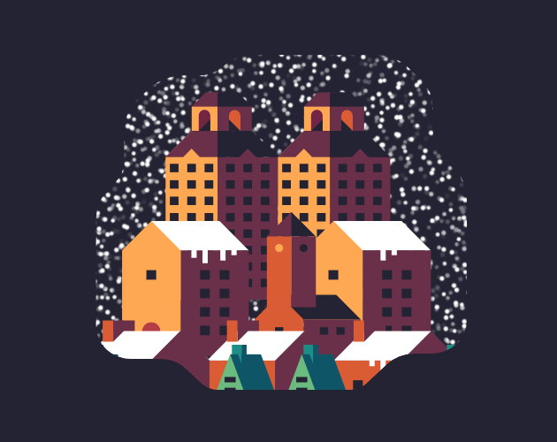
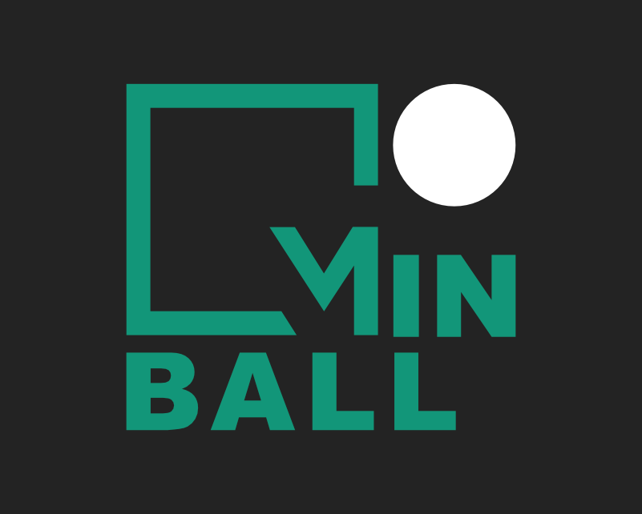
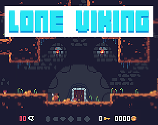
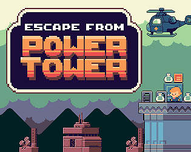
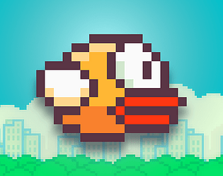
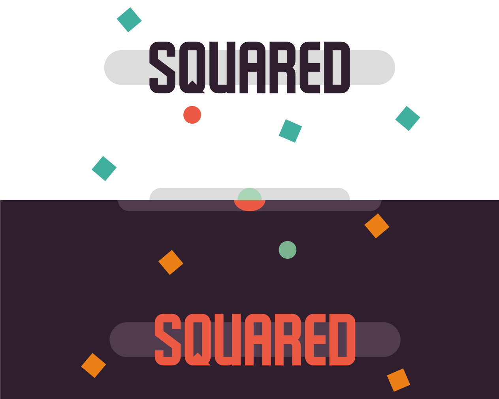
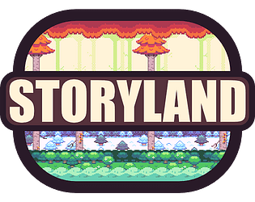
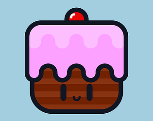

Entering my third game jam I felt pretty confident. This would more challenging than the last due it having a two day deadline. I decided to make an easier game to program so I could focus on art. This was a very challenging project because I had to balance the game without having too much time to play-test.

Having the idea to create a mobile game I wanted to create something simple but well made. I also wanted to work on my sound effects and music experience. I loved State of Plays pinball(INKS) With that in mind I developed MinBall

I wanted to create an environment where you could truly get lost. Taking inspiration from Hollow Knight I started creating the game. Mixing to together getting lost but also still having the player feel in control, was very challenging. Play testing was crucial

This was my second game jam having only a few days to complete I went to work. Having a lot more experience than my first jam I was able to space my time more evenly. It also taught me that to make a game even more enjoyable you should have people play test it to flush out the bugs.

Wanting to challenge myself and my coding abilities I decided to recreate a popular game. Not having to create art I was able to solely focus on the programming

My previous games I struggled with focusing on just one thing. I wanted to create a very simple game but make it very functional and polished. I also wanted to still make the player be able to still feel invested in the game, despite it's simple design

After competing in my first game jam, I wanted to flush out the idea more and learn from my mistakes. I decided to focus on programming the game and make it feel more polished.

This was the first game jam I took part in. I had limited development skills at this point but I was motivated to finish a game. This was very challenging due to its limited amount of time. It taught me how to keep my ideas channeled and not get crushed by over exerting myself.